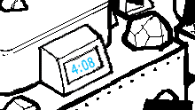

Four minutes until Doom Time.
Short liveblogging session now instead of a longer one in a few days. Because I want to hurry this along and get to the end of ACT 4! How much longer is this Act anyway… It seems like it won’t ever end…
YUP. It towers over the whole Land. It emanates a rather grave aura, kind of fitting since it’s the Final Boss’ residence. So GC, care to explain why John is here after he has just got through his First Gate out of Seven and armed with only his questionably useful pogo-hammer! I give you thirty seconds to present a valid justification after which I’m gonna start screaming “IT’S A TRAP” on and on and on and I will just ignore everything you say, forever. Choose your words wisely! READY…GO!!
HAHAHAHAHAHAHAH. Oh man, look at this outburst of little human words I’m saying! From my human mouth! Very fucking funny, GC. First things first Sburb does not really give you the chance to cheat your way through the game. Remember when John wanted Rose to just carry him to the gate while he took a well-deserved nap? That didn’t work out. The players are supposed to advance only thanks to their skills.
“YOU WONT BOTH3R W4K1NG 1T” she says. And what if the thing is already awake. It could wake up at any given moment! John could get there and come face to face with a very awake and ready to fight Denizen. It’s too dangerous of a gamble. There are lives at stake. Yup, plural, if something happens to John, Jade is automatically doomed as well. But GC, you’re out of lack, I don’t know if you mean harm or if you are really that optimistic in John succeeding, because the boy may be a bit of a pushover but he won’t let you play with his lif—
—EEEAAAAAH. JOHN!!!!!!! JOHN FUCKING EGBERT, ARE YOU REALLY THAT STUPID!!!!! THAT GULLIBLE OH MY GOD. He just agreed. Without even an ounce of doubt. John, you deserve whatever is coming for you!! I will stand by and watch as your Denizen kicks your ass and I won’t even care!! I will be as apathetic as Dave fucking Strider!!
Oh, I hadn’t seen that gate. So the trolls have fought their Denizens and know what The Ultimate Alchemy is, but still don’t know what The Ultimate Riddle is all about. Sounds like they may be at the final stages of their adventure. And yet, instead of getting to Skaia and fight The War Between Good and Evil or whatever it is called and WIN THE GAME, they are sitting around and trolling the kids. Okay, I’m not questioning your priorities here, not at all.

CASEY, DON’T FOLLOW HIM. Where is your mom. John, what did you do to the poor thing’s mother, she’s nowhere in sight!!
EB: so this is the seventh gate?
EB: that’ll take me into the palace and down to the sleeping denizen?
GC: NOP3 >:]
GC: TH1S 1S JUST 4 S1MPL3 R3TURN NOD3
GC: TH3R3 4R3 LOTS OF TH3S3 4ROUND
GC: JUST HOP 1N
GC: DONT WORRY 1LL G3T YOU TO TH3 G4T3 SOON 4FT3R TH4T
Return node. Does that mean we are going back to the First Gate or the Egberts home. I hope it’s the latter, Nanna will hopefully talk some sense into his head!!

AND WE ARE BACK TO THE VERY START.
> WV, AR: Prepare gift for the WQ.
OH DEAR. Here we go. It has started. The courtship. Honestly, you guys, you make it look like you haven’t seen a member of the opposite sex in 400 yea— WAIT. DAMMIT. They haven’t.


IS THAT A FREAKING CROWN OH GOD I FEEL SO DUMB SHE IS THE WHITE QUEEN!!!!!!!! WQ!!! That’s why they were so nervous! Aww, don’t worry I doubt the grudge between Prospit and Derse is still a thing after all these years! You have a civilization to rebuild after all! They made her a crown even though she’s not technically their queen! They still recognize her as a superior. And hey, PM! Don’t be shy, come and greet your qu—OH FUCK. Wait…. the Queen is still very much alive…. And PM was supposed to kill her…. there is absolutely no reason to do so now though…. it should be okay…

nOT OKAY!!!! PM, PUT THAT THING DOWN!!! WHAT DO YOU THINK YOU ARE DOING OH MY GOD, PLEASE THINK THIS OVER, YOU HAVE NO REASON TO EVEN ATTEMPT ANYTHING!!!!! DAMMIT THIS IS ALL JACK’S FAULT!!

> Meanwhile, in a long discarded memory…
DOES THIS SEEM LIKE THE MOMENT FOR A POV SWITCH I’M GOING TO SUE YOU, ANDREW HUSSIE.

A PARCEL MISTRESS seeks audience with royalty.
sHE SEEKS…. She seeks……audience… Oh, thank godness. PM, I knew you didn’t have it in you to kill people…..

That’s our White Queen. And the ring on her finger definitely has four spheric thingies, they should represent the four kids. Only two are illuminated because Dave and Jade have yet to enter The Medium.


A flurry of disquieting happenstance is related to the ADORED SOVEREIGN. With no other options, her counsel is all that is left to be sought.
LOOK AT HOW SHE TRUSTS HER!! SHE TRUSTS HER QUEEN WITH EVERYTHING THAT HAS HAPPENED TO HER!! She will make everything better again and they will help Jade and John together and PM is precious and perfect and I feel bad for ever doubting her.


So… the ring gives whoever is wearing it prototyping… privileges? Or just the Queens. Because let me tell you, that is some plot relevant difference…

|
They are going to fake their deaths. Do they know that the White Kingdom is doomed to lose nonetheless? Also… oh, wait… inevitable conquest, they do.
By the way how does a Queen even get exiled?! There is nobody above her to do that?! Oh, the mysteries… they just keep piling up.
And abdication? Aren’t we overestimating Jack just a tiny bit? He’s not doing anything that could really endanger anyone on Prospit SO FAR. He said it himself. Nobody would be so stupid as to attempt to assassinate the white monarchs. He gives hit lists to whoever he encounter— WAIT. Is this about the package?! Is whatever is in there SO IMPORTANT that the queen herself had to abdicate for PM to get it back?! And the King will have to abdicate as well…. Does PM know what’s in there? Maybe I underestimated Jade. NEVER underestimate Jade Harley. She wouldn’t think up all those overcomplicated schemes for nothing now, would she? But does she know that her present is now in the hands of Jack?! Was that planned? Will it still get to John?! Okay, I should stop adding questions and search for answers. If Jack Noir doesn’t get some important role in this story I will eat my socks, I’m saying it now. HE’S THE PAPERWORK MAN, FOR CRYING OUT LOUD! In the intermission he was the creator of the Exile City! He was in the lead of it all! Everyone took orders from him! And he killed people left and right! Slick and Jack are basically the same person, but Jack in the kids’ session has been a godforsaken comedy relief. Now Jack has John’s present. He could steal it? Making it get to John way later than it should? Or he could even some modifications to it, to the “final product” that John will get. I’m just saying that whatever Jack does, someone who has showed so much potential when given the occasion, even though it was in another session, can’t stay unimportant. I’m not saying he will fucking conquer the universe or something, just that he sure won’t keep playing hide and seek with the Queen as she tries to get him into pretty dresses!
The final hope for victory lies in patience and planning.
What is the White Queen even going on about. PROSPIT WILL LOSE THE WAR. That is a fact. …Don’t they know?

The WHITE KING of course can be found on the BATTLEFIELD. His CROWN may be retrieved there.
The RING must be designated for protection. He will supply further instruction on this matter.
WAIT. WHY IS SHE GIVING UP THE RING TO THE MAIL LADY. A MAIL LADY WHO IS ABOUT TO GO BACK TO THE DARK KINGDOM!!! AND CAN’T EVEN HANDLE A SWORD!!! WHAT IF SOMEONE FIGHTS HER FOR IT?!?? Ma'am, I’m not really questioning your wise, leaderly judgment here NO WAIT I DEFINITELY AM. That is the most ill-advised move in the history of ill-advised moves!!

The royal duty has been accepted.

And in time, fullfilled.
OH, OH MY. She did it. I guess… I overreacted?! Why can’t I be as apathetic as Dave. And by that I mean why am I not able to walk all over my emotions and pretend not to care.

OH MY GOD. She just… refused the crown… WV and AR gave it to her so that she could resume her position of power but she goes “no there is someone who deserves it more than me” and… It’s PM! And look at her she’s so surprised like “me?” YES, YOU PM, YOU DESERVE IT, YOU WERE NOBLE AND BRAVE AND— So maybe you can’t say that the Queen was the wisest when it came to hatch plans but… She’s so just and humble and… Such an incredible leader… Oh, no I’m not tearing up, I’m just allergic to these kind of scenes… I need a moment…

WV AND AR DON’T EVEN KNOW WHAT THE HECK IS GOING ON.
The men in this webcomic should just give up, it’s getting clearer and clearer that their role in this adventure is just to stand by and watch it unfold as the women set everything into motion.

Whenever you see rainbows, rest assured you are in Rose’s land. And actually Light and Rain are what make a rainbow! Are those… turtle shells…?
> Rose: Consult with Jaspersprite.
THE MOMENT OF THE TRUTH.

JASPERSPRITE: Meow.

PFFFFTAHAHAHA. Rose, you done fucked up!

ROSE: Is that all you have to say?
JASPERSPRITE: Purr purr purr.
ROSE: I thought you were supposed to be more helpful after your resurrection.
ROSE: Like a ghostly spirit guide. Wise, if frustratingly cryptic.
JASPERSPRITE: Purrrrrrrrrr.
ROSE: Actually, cryptic behavior would be welcome at this point.
ROSE: This is just inane.
JASPERSPRITE: :3
ROSE: Should I report to the others that my Kernelsprite is a Lolcat?
ROSE: Maybe Dave can take some screen captures and overlay some poorly spelled captions.
ROSE: Assuming he hasn’t already.
Don’t worry, he will be lenient, he is going to prototype his brother’s favorite creepy puppet after all. He will only WISH he had a dead cat to resurrect.
JASPERSPRITE: Meow.
ROSE: What are you doing there, by the way?
JASPERSPRITE: Im fishing!
ROSE: Oh. So you can talk.
HELLO?!? YOU CAN TALK!!! WELCOME BACK, JASPERS?!?! Would you look at that! He can talk!
JASPERSPRITE: But sadly there are no fish i think.
JASPERSPRITE: They were all eaten by the Denizen!
ROSE: Who?
JASPERSPRITE: It ate everything in the ocean and got so full that it took a long nap.
JASPERSPRITE: No there is surely not a single living thing left!
Oh. The fishes are not the consorts though… right?! The thought of the Denizen eating consorts kind of disturbs me….
JASPERSPRITE: Which is too bad because im pretty hungry.
ROSE: I think there might be some tuna in the cabinets.
JASPERSPRITE: Oh good idea i will look there!
Aww, they are back to being domestic. Well, Rose got used to take care of cats again with Mutie.
ROSE: Jaspers, the message you gave me years ago before you disappeared…
ROSE: What did you mean?
She didn’t get it? So Rose has not come into knowledge of some insight on the ones who created this game? What a shame.
JASPERSPRITE: Meow.
ROSE: Sigh…
JASPERSPRITE: :3
ROSE: I don’t understand.
ROSE: Is there some meaning to these responses, or are you just being obstinate?
“Meow.” is the new “HOO HOO HOO” . Unless he really just said “Meow” and Rose has just been hallucinating for all these years. I wonder what will be Cal’s technic of diversion? If it talks. Which obviously won’t. Because Lil'Cal is an inanimate object. So I won’t need to throw a tantrum when the puppet starts speaking. Which is a thing that won’t happen. Obviously. I definitely won’t go on a rant if it does. Of course.
JASPERSPRITE: You will understand when you wake up!
ROSE: Am I asleep?
JASPERSPRITE: Yes!
JASPERSPRITE: Rose im just a cat and i dont know much but i know that youre important and also you are what some people around here call the Seer of Light.
JASPERSPRITE: And you dont know what that means but you will see its all tied together!
JASPERSPRITE: All the life in the ocean and all the shiny rain and the songs in your head and the letters they make.
JASPERSPRITE: A beam of light i think is like a drop of rain or a long piece of yarn that dances around when you play with it and make it look enticing!
JASPERSPRITE: And the way that it shakes is the same as what makes notes in a song!
JASPERSPRITE: And a song i think can be written down as letters.
JASPERSPRITE: So if you play the right song and it makes all the right letters then those letters could be all the letters that make life possible.
JASPERSPRITE: So all you have to do is wake up and learn to play the rain!
I…..umh…what? I didn’t really understand anything….huh. So she will play a song. A song that she already subconsciously knows? She only has to write the letters down. And once she does, life will return on her planet? Did I get this right? She has to wake up first though. On Derse. And afterwards she will be effectively ready to play the rain/the song? Ugh, things were a lot clearer for John! …Wait, no. They weren’t. His purpose was spelled out. Not a word was said about HOW he would do it. So I guess we really have more information about Rose’s quest. Now if that information wasn’t given by a freshly come back to life young cat, maybe we would understand more….
So if you play the right song and it makes all the right letters then those letters could be all the letters that make life possible.
Letters that make life possible, huh…. now this might be a long stretch but, a cat wouldn’t know what the word for genetic code is, right? It could probably call it “all the right words” and “all the letters that make like possible”. The four letters in the DNA alphabet – A, C, G, T - carry the instructions to make all living organisms. The meaning of the code lies in the sequence of the letters. Just like you gotta have a precise order in the notes of a song to play it correctly. Does this make sense? Or am I making a fool out of myself by saying something especially stupid… But think about it. If Rose gets a DNA code from the song she plays she could recreate the fauna on her land through ectobiology! We’ve been selecting living beings and getting codes, who says we can’t do the opposite? We’ve got an alchemiter and an ectobiologist! Although I’m not sure John would be allowed to help. This is ROSE’s quest, after all. And everyone gets their own. And also all of the equipment to do that has been left on Earth. Well, there has gotta be some solution to that! John must do ectobiology stuff. Although he will probably fuck it up, GC said he was a disgrace in the field. But honestly, when does John not fuck things up.
ALSO SOMETHING THAT IS DEFINITELY NOT A COINCIDENCE. A bunch of pages after their introductions, the kids had some interesting flashes with some even more interesting captions…
JOHN:
The streets are empty. Wind skims the voids keeping neighbors apart, as if grazing the hollow of a cut reed, or say, a plundered mailbox. A familiar note is produced. It’s the one Desolation plays to keep its instrument in tune.
It is your thirteenth birthday, and as with all twelve preceding it, something feels missing from your life. The game presently eluding you is only the latest sleight of hand in the repertoire of an unseen riddler, one to engender a sense not of mirth, but of lack. His coarse schemes are those less of a prankster than a common pickpocket. His riddle is Absence itself. It is a mystery dispersing altogether, like the moon’s faint reflection, with even one pebble of inquiry dropped in its black well. It is the most diabolical riddle of all.
“Absence diminishes little passions and increases great ones, as wind extinguishes candles and fans a fire.” -Walt Whitman
Yes, you are certain Walt Whitman said that. One hundred percent positive.
You have a feeling it’s going to be a long day.
DAVE:
You don’t even know what’s up with this sick heat. The sun threatens to set but won’t step off. It’s staring you down, like the big red eye of a hot needle skipping on a groove its tracing ‘round the earth. While lingering in midair its heat seems to suspend time itself, stretching it like warped vinyl. It’s meant to rain this season but there ain’t been a drop in sight. Even a little drizzle would help. Might help to fizzle this sizzle a little bizzle, set the record straight on this global turn-tizzle.
“So don’t change the dizzle, turn it up a little
I got a living room full of fine dime brizzles
Waiting on the Pizzle, the Dizzle and the Shizzle
G’s to the bizzack, now ladies here we gizzo
When the pimp’s in the crib ma
Drop it like it’s hot
Drop it like it’s hot
Drop it like it’s hot…"
-English Romantic poet, John Keats
ROSE:
You wonder if this rain will ever let up. It’s driven since the month began, perhaps long enough to forget its purpose. It no longer even knows to assuage fire. Somewhere a zealous god threads these strings between the clouds and the earth, preparing for a symphony it fears impossible to play. And so it threads on, and on, delaying the raise of the conductor’s baton.
How you hate this season.
"April is the cruelest month, breeding lilacs out of the dead land, mixing memory and desire, stirring dull roots with spring rain.” -American sports legend, Charles Barkley
John has Wind. Rose has Rain. And I was wrong about Dave. He has Heat. And also lava though.
DAVE’S LAND IS A GIGANTIC GEAR WITH A HEART OF LAVA. If Dave’s land is not called Land of Heat and Lava, I will just stop making predictions altogether. And it is particularly interesting how he mentioned needing rain! Well then, Rose may be just what you need! So that could mean that the kids will help each other with their quests!
ALSO SUPER INTERESTING CONSIDERING THAT THIS IS WHAT JADE’S LAND WILL LOOK LIKE:
(And no, I did not forget about Jade, she didn’t have any weather-related flashes. I fear everything about Jade is supposed to be goddamn surprise and it’s gonna blow up in my face in a similar fashion to the "Jade’s grandpa is dead and her guardian is a omnipotent dog" revelation.)
ANYWAY what I was saying is… Take a load of this:
“April is the cruelest month, breeding lilacs out of the dead land, mixing memory and desire, stirring dull roots with spring rain.”
Dead land. Stirring dull roots with spring rain. Now, this is not Rose’s land we are talking about. The fauna of her land is dead. Not the soil itself. HOWEVER, LOOK AT JADE’S LAND! Her island is plenty of vegetation! Yet her land is devoid of any! There is not a spot of green! Might be related to the fact that the volcano is now very active. Now what would you need to bring vegetal life back in a dead soil? Rain water. Aaand, I don’t need to add anything else. …Wait, that would mean that Rose will help both Jade and Dave. DAMMIT THIS IS CONFUSING. So maybe someone else will help Dave. John could help? With Wind?? OH MY, I just had the most beautiful revelation. Like Dave will be 24/24 crashing in John’s land because his own his too damn hot all the time while John’s is so chilly. And one day John will be like “dave, not that your presence bothers me or anything but… don’t you have a quest to complete in your own land?” “yeah dude i didn’t really get it though. calsprite is not as helpful as your resurrected grandma or anything” “…rose said you’ve just been avoiding it all this time.” “what no me and cal are so chill don’t listen to her” And that’s the story of how Dave will never complete the quest of his planet. …What was I talking about again? Oh, back to that pesterlog.
JASPERSPRITE: Does that make sense rose sorry i disappeared for so long.
Jaspers! Tell us! Who killed you?! Who is the monster who would harm a young kitty?!
ROSE: Sort of.
ROSE: It sounds like you aren’t exactly in complete command of this information yourself, so I won’t press you on it for now.
ROSE: You’re a pretty good cat, Jaspers. I missed you.
JASPERSPRITE: Purr purr purrrrrrrr.
Awwww. You see Rose, it’s good to talk openly about what you feel, and get things off your chest.
Rose: Pester Jade.

JADE WAKE UP ALREADY YOU’VE BEEN ASLEEP FOR HALF OF THIS GODDAMN WEBCOMIC.
TT: I spoke with Jaspers.
TT: I didn’t understand what he told me.
TT: He said I’ll understand once I “wake up”.
TT: For some reason this made me think of you.
GG: hehehe……
GG: yeah i bet hes right!
TT: We wouldn’t happen to be talking about awakening in a sort of breezy, philosophical sense, would we?
TT: Is my dead cat concerned with my enlightenment? Should I prepare to shed this coil of ignorance and suffering?
GG: wow no i dont think so…
GG: hes being a bit more literal than that!
GG: what did he say?
TT: I doubt I could reproduce the statements with fidelity.
TT: It was like listening to a five year-old describe a dream.
TT: The content manages to take a back seat to the simple heartwarming spectacle of the moment.
GG: :)
GG: well what he meant was…..
GG: that you have a dream self
GG: who is supposed to wake up whenever your real self goes to sleep
GG: we all do! all four of us i mean
GG: but see your dream self still stays asleep when you go to sleep
GG: because you havent woken up yet!
Hey, you spilled the beans there, didn’t ya? Whenever you want to get a secret out of Jade Harley, just contact her while she’s napping.
TT: I think I get it.
TT: I take it your “dream self” is wide awake when you sleep?
GG: yes
TT: And would I be out of line in additionally presuming this has been the case for many years, at least as long as I’ve known you?
GG: no you would not be out of line!
GG: in fact im asleep now
TT: That was to be my next wild presumption.
GG: :p
TT: So when I wake up, can I look forward to being able to message people in my sleep too?
GG: no only i can do that!
GG: because of my robot
TT: Oh, right.
TT: I forgot about your robot.
TT: My short term recall seems to eschew the profoundly ridiculous.
GG: you guys can probably make your own i guess……
I doubt it, dear. Not everyone has been homeschooled by their WORLD RENOWNED EXPLORER-NATURALIST-TREASURE HUNTER-ARCHEOLOGIST-SCIENTIST-ADVENTURER-BIG GAME HUNTER-BILLIONAIRE EXTRAORDINAIRE grandpa.
GG: but you need to wake up first for it to matter and maybe by the time that happens you might not even need them!!!
AND JUST WHAT DO YOU MEAN BY THAT. Oh, NO! Should my ‘ambiguos things that Jade says’ list be updated? I thought I could have left it behind definitely! Dammit, Jade!
TT: I’m not sure if necessity is a concept I’d associate with such a contraption even under some of the more obscure scenarios imaginable.
TT: But good to know I guess.
TT: Here’s another question, which I’m sure will look stupid once I’ve finished typing it.
TT: If my dream self is asleep, does that mean she’s dreaming, and if she is, who’s dreaming the dream, her or me?
GG: um…….
GG: ok well i dont really know how to answer the second part but yeah shes dreaming!
GG: shes most likely lying in your bed troubled and restless
GG: about things burdening her
GG: which is to say you!!!!!
GG: things about who you really are and what your purpose is
GG: but you cant start figuring those things out yet because youre not awake because youre not ready yet
GG: thats why you have such terrible dreams all the time rose!
TT: Ok. How do I wake up?
GG: im sure it would help to start piecing together the clues to nudge your subconscious
GG: or maybe face some things you havent faced yet?
Jade, she just had a heartfelt reunion with her dead cat. For Rose Lalonde that is enough facing issues for a lifetime. If you want her to admit that she writes wizard fanfictions on AO3, I fear you will have to wait a few years. If you want her to work out her issues with MOM, come back in a few decades.
GG: i dunno! its for you to find out
GG: maybe the stuff you wrote on your walls can give you a clue?
TT: What stuff?
GG: the….
GG: er
GG: didnt dave tell you?
TT: Tell me what?
GG: ._.
TT: Are you saying he said I defaced the walls of my room?
TT: While not appearing to be cognizant of the scrawlings?
TT: Like John?
TT: I really hope that’s not what you’re saying.
TT: It might freak me out.
WHAT. ROSE TOO?!?!? Looking forward to Jaspers and wizards and tiny hearts scribbled all over the walls. A big “R. L. <3 WIZARDS" graffiti occupies a whole wall.
GG: he said he was going to tell you <_<;
TT: Hold on.
I hope you two were legitimately concerned about her and not making fun of the girl! Then again Dave is in no position to make fun of everyone since he probably wrote a whole novel on the walls of his bedroom considering how fucked up the poor kid is.

TT: Strider.
TT: I need you to do me a favor.
TT: Can you take a capture of my bedroom and send me the file?
TT: For no reason in particular?
Afraid Dave is still on the roof trying to hatch that egg… Or he gave up and is trying to recuperate the microwave Jade threw away. Either way he is bus— WAIT WAIT FUCK FUCK FUCK WAIT FUCK

AAAAAHHHHHHHHH!!!!!!!!!! FOU MINUTES OH MY GOD DAVE WHERE ARE YOU OH MY GOD WHY IS JADE SLEEPING WHY THE FUCK IS SHE ASLEEP RIGHT NOW GODDAMMIT

|
TT: He’s not answering. |
JADE WHY ARE YOU SLEEPINF DOES THDS SEEM LIKE THE MOMENT TO SLEEP YOU ARE HIS SEVEDR PLAYER DAMMIT AAAAAHHHH

*SMASHES WALL* THAT. IS. ADORABLE.
GG: he made me promise not to bug him while im asleep!
TT: Can you do it anyway?
GG: but he will find a way to be clever and make me punch myself in the face again :(
TT: Did he tell you what I wrote on the walls?
TT: Wait.
TT: What?
HE LET HER SLEEP DAVE YOU GODDAMN IDIOT YOU SHOULDN’T BE DOING THIS ALONEEEEE

THE EGG IS STILL THERE METEOR IS IN SIGHT DAVE IS NOWHERE TO BE SEEN

GODDAMMIT DAVE!!!!! DAVE JUST PULLED A LALONDE. He lalonded so bad.
to lalonde: the act of forgetting that you aren’t the only one person in the universe and that you are able to ask for help whenever you deem it necessary. It is unclear why people seem to be inclined to embrace this behavior especially right before a metEOR IS A COUPLE OF MINUTES AWAY FROM ERASING THEM OUT OF FUCKING EXISTENCE.
> John: Await further instruction.
WHAT KIND OF CRUEL POV SWITCH IS THIS
And I really have to stop reading now. The cruel POV switches won’t ever stop. That is because the author of this webcomic evidently enjoys his readers’ suffering. :(